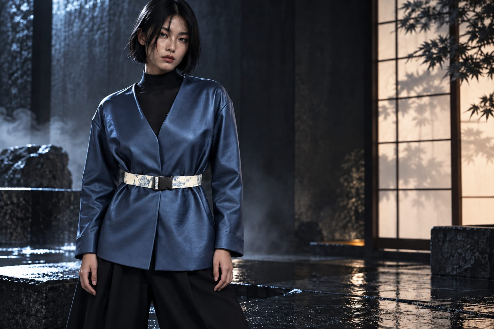
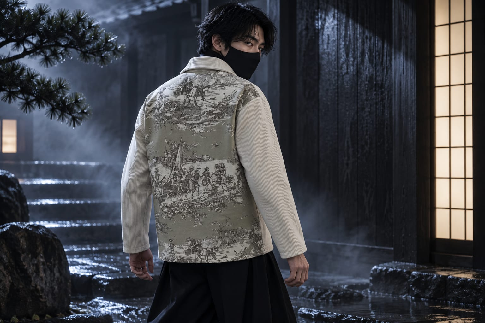

AJ · Vestes en pièces uniques
Une veste.
Une seule.
Chaque veste est cousue par Julia, dans des tissus achetés en France. Pas d'usine, pas de série : un seul exemplaire de chaque.
Rendu de campagne généré à partir de la pièce réelle, mannequin fictif. À propos des visuels.
Une seule de chaque
Chaque veste existe en un seul exemplaire. Il n'y en aura pas d'autre identique.
Cousue par Julia
Pas d'usine, pas de série. Chaque pièce est cousue par Julia, sur sa Juki 7000A.
Tissus de France
Les tissus sont achetés en France, toiles de Jouy comprises.
Les pièces
Trois vestes. Une seule de chaque.

Veste bleue ceinturée
Bleu profond au reflet lustré, ceinture et parements en toile de Jouy crème et bleu.
Voir la pièce
Surchemise écrue côtelée
Longue et ample, zip central, dos entier en toile de Jouy gris-sauge.
Voir la pièce
Veste indigo
Denim indigo, zip métal, poches bordées de toile de Jouy, dos entier beige et bleu.
Voir la pièceRendus de campagne générés à partir des pièces réelles, mannequins fictifs. À propos des visuels.
La campagne
Neuf vues, trois vestes.





Rendus de campagne générés à partir des pièces réelles, mannequins fictifs. À propos des visuels.
L'atelier
Cousue par une seule personne.
Julia a un BTS Mode. Elle travaille comme conseillère de vente en prêt-à-porter féminin dans le Marais, et coud par passion. Chaque veste AJ passe par sa machine, une Juki 7000A.
Julia propose aussi des retouches : ourlets et autres reprises.
Les retouches